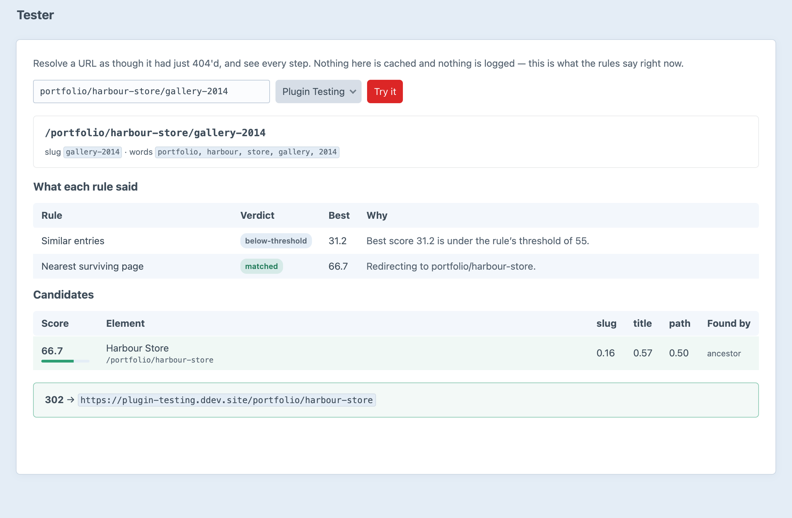
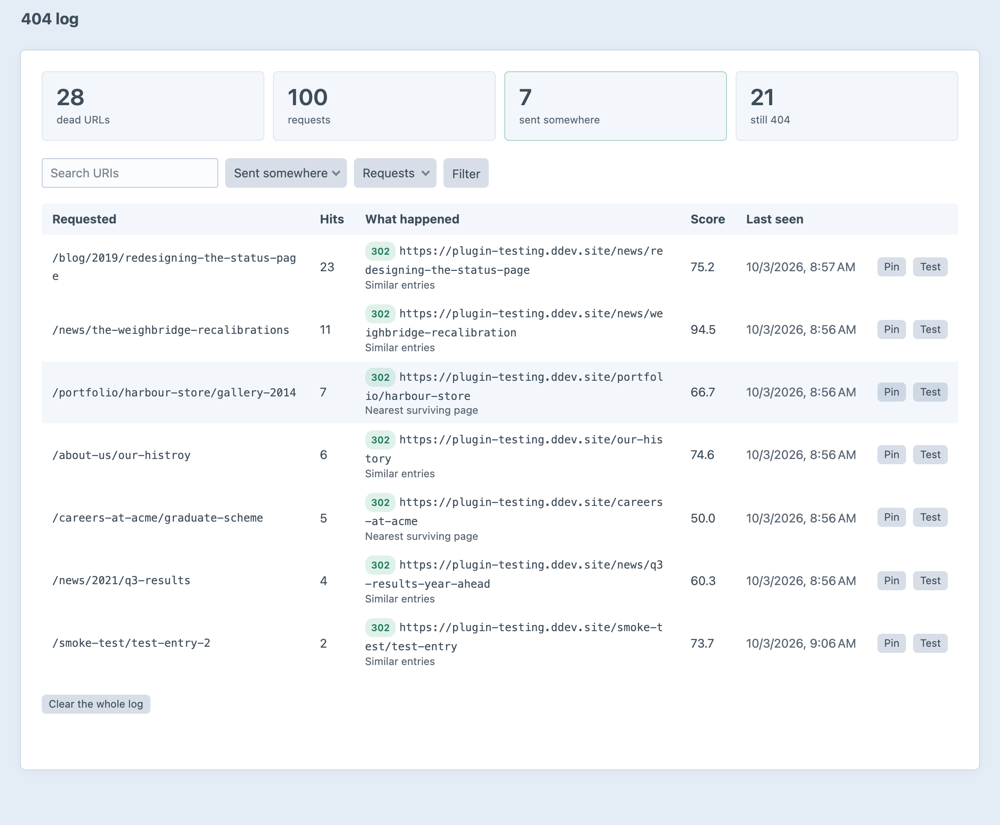

Every dead URL has a friend.
When a page 404s, Friend finds the entry the visitor was probably after, and sends them there under rules you write.
A 404 is usually someone holding a URL that used to work. Friend redirects before Craft renders the error page, and 302 is the default: a rule moves up to 301 once its log entries have earned it.
Friend installs with a rule for the first one switched on, an example for the second, and guards for the third.
Everything you have written down is checked before Friend guesses anything.
When it applies, where it may point, how sure it must be. Below the threshold, the rule declines.
Type any URL and see the whole decision: every rule, its verdict, and the candidates with their scores.

One row per dead URL, with a hit counter: where it went, at what score, and which rule sent it.
